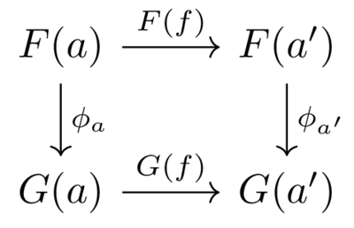
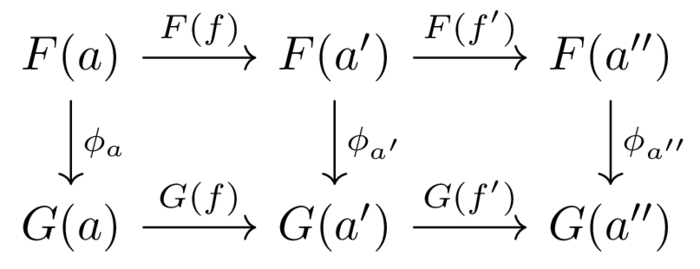
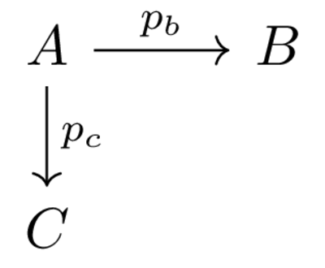
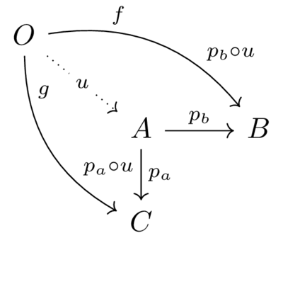

Category Theory Two Day
1. Computational Category Theory
… category theory … is a guide to computation. The conceptual clarity gained from a categorical understanding of some particular cirucmstance in mathematics enables one to see how a computation of relevant entites can be carried out for special cases.
[1]
2. More Vocabulary
2.1. Functor
Imagine for a moment that you had a reasonably good theory that related neural activity to behavior, say something to do with the patterns of spikes in the neurons of the brain across time (or to make it a bit more accessible to the sort of experiments psychologists do a pattern of EEG or voxel activity in a functional magnetic resonance image). Further imagine that you have a pretty good theory about mental constructs and behaviors. How could you relate those two "worlds" together?
A functor connects to categories together. Assume a category \(\mathcal{A}\) and a second category \(\mathcal{B}\)1. A functor specifies a mapping from the objects of \(\mathcal{A}\) to the objects of \(\mathcal{B}\) and the arrows of \(\mathcal{A}\) to the arrows of \(\mathcal{B}\). This mapping cannot be any old mapping. It must obey the rule that it respects the structure of the source category so that the things in \(mathcal{B}\) obey the rules of the things in \(\mathcal{A}\). To state this in a formula we will call the functor \(F\) and we will consider two compatible mappings from \(\mathcal{A}~ f \text{ and } f'\). To be functorial it must be the case that: \[F(f' \circ f) = F(f') \circ F(f)\text{ and,}\] \[F(id_a) = id_{F(a)}\text{.}\]
An informal way to think of the above is as seeing the structure of one category when place into another. You might want to do this for the same reason you take an x-ray. An x-ray does not produce a broken bone, but it makes it visible. By mapping the objects of the body to pixels in a radiograph we may make discoverable relationships that were present, but invisible, when we looked for them in the first category.
2.1.1. Discussion Question class_exercise
2.2. Natural Transformation
There may be more than one functor between two categories. If there are we might be interested in whether one of them is a version of the other. To determine this we try to transform one of the functors into the other. In doing we might choose a transformation that is particularly convoluted and doesn't agree with our notion of reasonable transformations. Those don't count. For most of mathematics history this notion of reasonableness was called "naturality" and left to the communal intuition of professional mathematicians. One of the motivations for category theory was to make the term "natural transformation" rigorous.
To compare two functors we could compare their starting point, but that hardly seems useful. The initial category is the same for both by definition. So to compare the functors and their mapping of objects and arrows we must look to the landing zone. If we can align the objects of functor \(F\) with those of functor \(G\) we have made a start. These objects are in the landing category \(\mathcal{B}\). For an object \(a \in \mathcal{A}\) we will have both \(F(a)\) and \(G(a)\), the objects in \(\mathcal{B}\) that each functor assigns to the same object from \(\mathcal{A}\).
2.2.1. Discussion Pause class_exercise
The only things we have are objects, arrows, and the requirements they must meet. Conveniently, the destination category for the objects of the functors is the same one for both functors. When we are in a category we have arrows as well as objects. Our first requirement then is to find for each object \(a \in \mathcal{A}\) the pair of objects \(F(a)\) and \(G(a)\) in \(\mathcal{B}\) an arrow in \(\mathcal{B}\) that connects2 them: \[F(a) \rightarrow G(a)\]
If there are no such arrows we don't have a transformation, let alone a natural transformation, but if we do have such arrows then we have a transformation. The question remains whether it is natural?
2.2.2. Discussion Pause class_exercise
When we created a category we specified objects and arrows, but then we went further and required composition, associativity, and identities. The intuition goes that any natural transformation of two functors should respect these features of both categories: identity and composition.
To test whether they do obey the rules we need a two objects and one arrow: \[a\text{ and }a' \text{ in } \mathcal{A} \text{ and an arrow } f:a \rightarrow a'\] then we need to look at the square that emerges after they have both been transported to category \(\mathcal{B}\) by both of the functors.

Figure 1: The Naturality Square. As we are in a category both compositions must exist: the route along the top and down the right hand side, and the route down and along the bottom. For things to be natural those two compositions must be the same. What does "the same" mean here?
To test whether they do we need a three objects and two arrows: \[a,a',a'' \text{ in } \mathcal{A} \text{ and arrows } f:a \rightarrow a'; f':a' \rightarrow a''\] then we need to look at the square:

2.2.3. Vertical Composition of Natural Transformations class_exercise
Individually or in small groups can you prove that if we have functors \(F,G \text{ and } H\) each from categories \(\mathcal{A} \text { to } \mathcal{B}\) and also natural transformations from \(\phi : F \rightarrow G\) and \(\psi : G \rightarrow H\) then we also have their composition \(\psi \circ \phi : F \rightarrow H\)?
3. Preliminary Remarks
There is a lot terminology in category theory. Too much to include here, but there are also notions in category theory that seem to bleed between specific constructions. One of these is the idea of a universal property. It is the "best" example of whatever it is an example of. To give an example of this idea we will consider wedges and products.
4. Thinking Productively
4.1. Wedges
Consider an element in a category that has morphisms that terminate in two different co-domains.

We can use a visual mnemonic and call this a wedge. There may be a lot of wedges though that have at the end of their legs \(B\) and \(C\). I have given you \(A\) here, but there could also be an \(A'\), \(A''\) and so on. Is one of them "better" than the others? Is there a criteria we could apply consistently?
4.2. Products
Now assume that whenever you have another object in that category that has co-domains \(B\) and \(C\) it always has a unique morphism to \(A\) such that all the triangles commute, that is, graphically:

And that this is true of all the other \(A'\) \(A''\) and so on that I mentioned before. They all have that unique arrow that connects them \(A\) and factors their connection to \(B\) and \(C\).
Then the triple \((A,p_b,p_c)\) (but often just referred to by the object \(A\) and without the morphisms) is a product. In this regard, since it is true for all wedges it is universal. It can also be viewed as a limit from a slightly different perspective.
4.3. What is your programming language's equivalent for creating a "product"3 as described above? class_exercise
4.4. Does this idea of a universal property have any connection to the things we read or think about in empirical neuroscientific or psychological studies? class_exercise
4.4.1. Purpose of these thinking exercises
The idea is to see that there are programming counterparts of this "abstract nonsense". And to get a little practice trying to map these abstract ideas to concrete entities we feel we can get our hands on.
5. Psychological Case Study: Dempster-Shafer Theory
Dempster-Shafer theory is, among other things, a theory of evidence and belief revision [2]. It began, with Dempster, as an idea about probability intervals. A probability interval has a lower and upper probability, and intuitively seems a reasonable idea about how you might believe something. For instance, you may not have a precise, crisp, belief about your favorite sporting team winning a game, but you might be willing to say that it is more likey than $X$%, but less than $Y$%. Shafer added to this interpretation ideas about evidence revision. How one could, maybe should, revise these estimates in light of new information. [3] provides a more modern overview with all the math and a common example treated from multiple perspectives.
It is common to think that how strongly people belive something is akin to their subjective probability for the same proposition, but what does it mean to have a subjective probability for a counter-factual statement? We may be able to ascribe a numerical value to our degree of belief, but is that the same as a probability judgement? Because of issues like these people have looked at alternative accounts of belief and the calculus of Dempster and Shafer is one of them. It is possible to develop the theory of probability categorically [4], though I won't go into it here as it benefits from some familiarity with measure theory, and the categorical concept of a monad. It appears it is also possible to develop Dempster-Shafer theory categorically [5].
In order to attempt some practical use of this category theory diversion I want to do the following: an in-class discussion/application of category theory, and a short programmatic exercise as a take home project.
5.1. Boolean and Bayesian Categories of Belief class_discussion
In Kennes' [Page 176 5] article there is a short summary of both categories. I will divide you into two groups. You will read your brief section, and discuss it so that you can share it after a short break with the other half of the class. We will discuss as a group what we like about each account and whether we benefit from this categorical account, e.g. by having a common formalism to compare the two.
5.2. Dempster-Shafer Theory of Evidence Combination homework
- Read the section on DS as a category [Page 177 5]
- Write a short program that computes Dempster's combination rule. You will find it easier to work from the definition given in wikipedia than this article. The idea is that I should be able to use your function for a specificed mass function. You get to decide the data structure for representing the mass function.
- Commit your implementation and push it to the repository.
- In class be prepared to discuss whether the math your read about categorizing DS Theory made any useful contact with the effort to program a computational algorithm.
6. Companion and Optional Readings
- A good online book that seeks to connect programming to category theory is Category Theory for Programmers. The Chapter on Products is here.
7. References
Footnotes:
Note that nothing prevents these "two" categories being the same category. Then you have an endofunctor that maps back on itself.
Note that natural transformations are for a particular direction between two functors.
Product is in quotes, because I don't want the product as in multiplication, but the thing, to be very ambiguous, that is most like the thing I described graphically above.